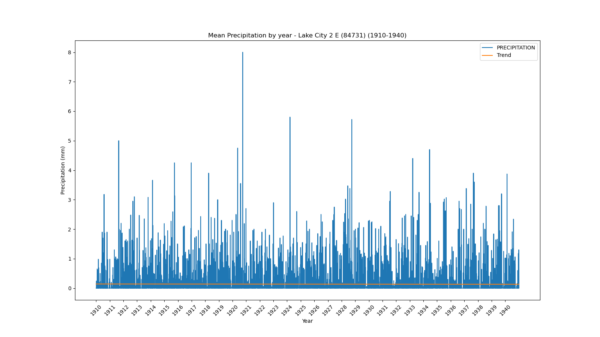
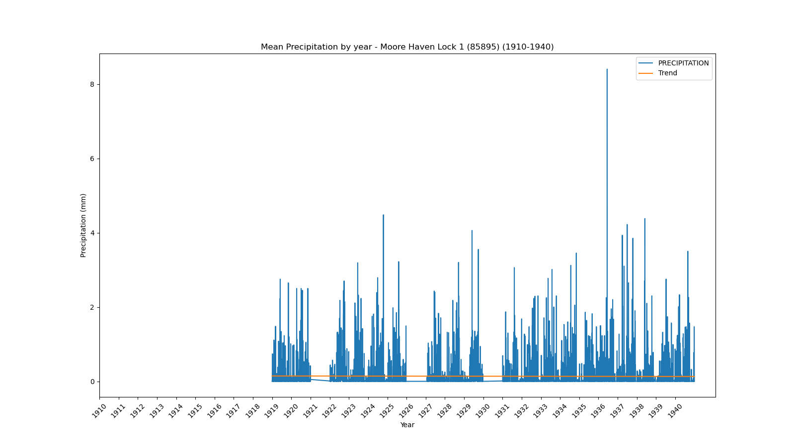
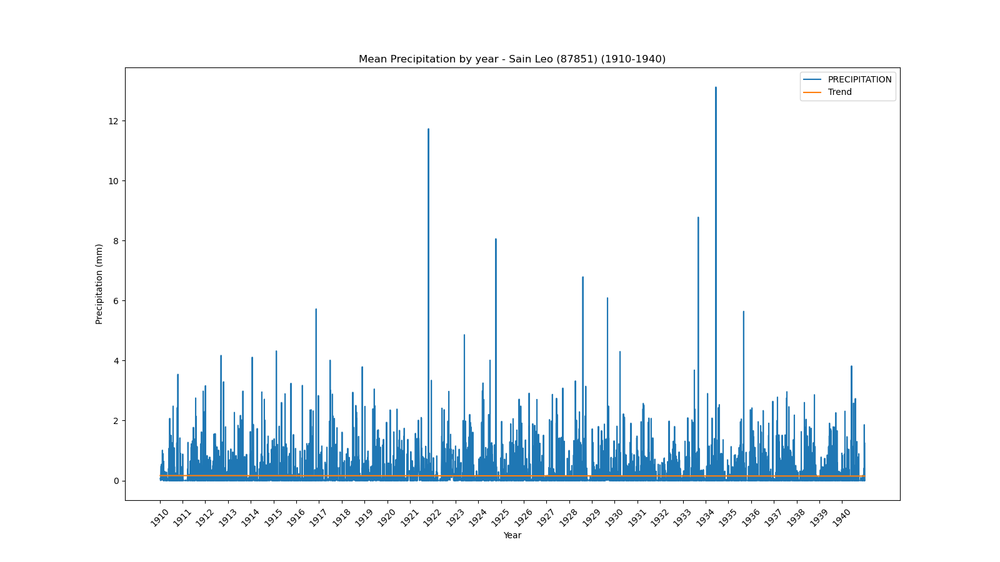

<!DOCTYPE html>
<html>
<head>
    
    <meta http-equiv="content-type" content="text/html; charset=UTF-8" />
    
        <script>
            L_NO_TOUCH = false;
            L_DISABLE_3D = false;
        </script>
    
    <style>html, body {width: 100%;height: 100%;margin: 0;padding: 0;}</style>
    <style>#map {position:absolute;top:0;bottom:0;right:0;left:0;}</style>
    <script src="https://cdn.jsdelivr.net/npm/leaflet@1.9.3/dist/leaflet.js"></script>
    <script src="https://code.jquery.com/jquery-1.12.4.min.js"></script>
    <script src="https://cdn.jsdelivr.net/npm/bootstrap@5.2.2/dist/js/bootstrap.bundle.min.js"></script>
    <script src="https://cdnjs.cloudflare.com/ajax/libs/Leaflet.awesome-markers/2.0.2/leaflet.awesome-markers.js"></script>
    <link rel="stylesheet" href="https://cdn.jsdelivr.net/npm/leaflet@1.9.3/dist/leaflet.css"/>
    <link rel="stylesheet" href="https://cdn.jsdelivr.net/npm/bootstrap@5.2.2/dist/css/bootstrap.min.css"/>
    <link rel="stylesheet" href="https://netdna.bootstrapcdn.com/bootstrap/3.0.0/css/bootstrap.min.css"/>
    <link rel="stylesheet" href="https://cdn.jsdelivr.net/npm/@fortawesome/fontawesome-free@6.2.0/css/all.min.css"/>
    <link rel="stylesheet" href="https://cdnjs.cloudflare.com/ajax/libs/Leaflet.awesome-markers/2.0.2/leaflet.awesome-markers.css"/>
    <link rel="stylesheet" href="https://cdn.jsdelivr.net/gh/python-visualization/folium/folium/templates/leaflet.awesome.rotate.min.css"/>
    
            <meta name="viewport" content="width=device-width,
                initial-scale=1.0, maximum-scale=1.0, user-scalable=no" />
            <style>
                #map_47733d2405099f90d857fd827cc5b6b4 {
                    position: relative;
                    width: 100.0%;
                    height: 100.0%;
                    left: 0.0%;
                    top: 0.0%;
                }
                .leaflet-container { font-size: 1rem; }
            </style>
        
</head>
<body>
    
    
            <div class="folium-map" id="map_47733d2405099f90d857fd827cc5b6b4" ></div>
        
</body>
<script>
    
    
            var map_47733d2405099f90d857fd827cc5b6b4 = L.map(
                "map_47733d2405099f90d857fd827cc5b6b4",
                {
                    center: [28.0, -82.5],
                    crs: L.CRS.EPSG3857,
                    zoom: 7,
                    zoomControl: false,
                    preferCanvas: false,
                }
            );

            

        
    
            var tile_layer_b905937692923e5856a531a310c332f6 = L.tileLayer(
                "https://cartodb-basemaps-{s}.global.ssl.fastly.net/dark_all/{z}/{x}/{y}.png",
                {"attribution": "\u0026copy; \u003ca target=\"_blank\" href=\"http://www.openstreetmap.org/copyright\"\u003eOpenStreetMap\u003c/a\u003e contributors \u0026copy; \u003ca target=\"_blank\" href=\"http://cartodb.com/attributions\"\u003eCartoDB\u003c/a\u003e, CartoDB \u003ca target=\"_blank\" href =\"http://cartodb.com/attributions\"\u003eattributions\u003c/a\u003e", "detectRetina": false, "maxNativeZoom": 18, "maxZoom": 18, "minZoom": 7, "noWrap": false, "opacity": 1, "subdomains": "abc", "tms": false}
            ).addTo(map_47733d2405099f90d857fd827cc5b6b4);
        
    
            var marker_b370f7449ae87ebf72b05b0220b82450 = L.marker(
                [29.72, -85.03],
                {}
            ).addTo(map_47733d2405099f90d857fd827cc5b6b4);
        
    
            var icon_964d2b079e32f7a9b7b1628636b9777d = L.AwesomeMarkers.icon(
                {"extraClasses": "fa-rotate-0", "icon": "info-sign", "iconColor": "white", "markerColor": "orange", "prefix": "glyphicon"}
            );
            marker_b370f7449ae87ebf72b05b0220b82450.setIcon(icon_964d2b079e32f7a9b7b1628636b9777d);
        
    
        var popup_2203c331efa1ab1fa6741d0a6982ae69 = L.popup({"maxWidth": 1000, "minWidth": 500});

        
            
                var html_441e5accc299a91bd9e5a309b003f61c = $(`<div id="html_441e5accc299a91bd9e5a309b003f61c" style="width: 100.0%; height: 100.0%;"><b>Apalachicola Airport (80211)</b><br>lat: 29.72, lon: -85.03<br><a href='../../static/img/plots/timeseries/precip_daily/80211_1910-1940.png' target='_BLANK'></a></div>`)[0];
                popup_2203c331efa1ab1fa6741d0a6982ae69.setContent(html_441e5accc299a91bd9e5a309b003f61c);
            
        

        marker_b370f7449ae87ebf72b05b0220b82450.bindPopup(popup_2203c331efa1ab1fa6741d0a6982ae69)
        ;

        
    
    
            var marker_e4f73a38d2355529f826a62fb6a7aac4 = L.marker(
                [27.22, -81.86],
                {}
            ).addTo(map_47733d2405099f90d857fd827cc5b6b4);
        
    
            var icon_3f80f0430c00a31c1669cdb023ca98b6 = L.AwesomeMarkers.icon(
                {"extraClasses": "fa-rotate-0", "icon": "info-sign", "iconColor": "white", "markerColor": "lightgreen", "prefix": "glyphicon"}
            );
            marker_e4f73a38d2355529f826a62fb6a7aac4.setIcon(icon_3f80f0430c00a31c1669cdb023ca98b6);
        
    
        var popup_83446e2262a0c1d952a01fe270eb21b0 = L.popup({"maxWidth": 1000, "minWidth": 500});

        
            
                var html_70489eb68e5725bff542f1ca47d383ec = $(`<div id="html_70489eb68e5725bff542f1ca47d383ec" style="width: 100.0%; height: 100.0%;"><b>Arcadia (80228)</b><br>lat: 27.22, lon: -81.86<br><a href='../../static/img/plots/timeseries/precip_daily/80228_1910-1940.png' target='_BLANK'></a></div>`)[0];
                popup_83446e2262a0c1d952a01fe270eb21b0.setContent(html_70489eb68e5725bff542f1ca47d383ec);
            
        

        marker_e4f73a38d2355529f826a62fb6a7aac4.bindPopup(popup_83446e2262a0c1d952a01fe270eb21b0)
        ;

        
    
    
            var marker_f568313a2fa86744dfa3cab180e44369 = L.marker(
                [27.59, -81.53],
                {}
            ).addTo(map_47733d2405099f90d857fd827cc5b6b4);
        
    
            var icon_82e3f84b2c356f1487d1a930a596b9b8 = L.AwesomeMarkers.icon(
                {"extraClasses": "fa-rotate-0", "icon": "info-sign", "iconColor": "white", "markerColor": "lightgreen", "prefix": "glyphicon"}
            );
            marker_f568313a2fa86744dfa3cab180e44369.setIcon(icon_82e3f84b2c356f1487d1a930a596b9b8);
        
    
        var popup_77135106b14c6cf7382ba15afd011f5d = L.popup({"maxWidth": 1000, "minWidth": 500});

        
            
                var html_4536b0e97d85bf2590ec2805ce647201 = $(`<div id="html_4536b0e97d85bf2590ec2805ce647201" style="width: 100.0%; height: 100.0%;"><b>Avon Park 2 W (80369)</b><br>lat: 27.59, lon: -81.53<br><a href='../../static/img/plots/timeseries/precip_daily/80369_1910-1940.png' target='_BLANK'></a></div>`)[0];
                popup_77135106b14c6cf7382ba15afd011f5d.setContent(html_4536b0e97d85bf2590ec2805ce647201);
            
        

        marker_f568313a2fa86744dfa3cab180e44369.bindPopup(popup_77135106b14c6cf7382ba15afd011f5d)
        ;

        
    
    
            var marker_9a5153b587905a35299739e2167d958c = L.marker(
                [27.95, -81.79],
                {}
            ).addTo(map_47733d2405099f90d857fd827cc5b6b4);
        
    
            var icon_3dcd40fcf6e05f26675c834a5a144640 = L.AwesomeMarkers.icon(
                {"extraClasses": "fa-rotate-0", "icon": "info-sign", "iconColor": "white", "markerColor": "lightgreen", "prefix": "glyphicon"}
            );
            marker_9a5153b587905a35299739e2167d958c.setIcon(icon_3dcd40fcf6e05f26675c834a5a144640);
        
    
        var popup_2300176c0c6d9b37b6c0a4b65e374a51 = L.popup({"maxWidth": 1000, "minWidth": 500});

        
            
                var html_1e5fd5ee7591e9cda061786fbee77fee = $(`<div id="html_1e5fd5ee7591e9cda061786fbee77fee" style="width: 100.0%; height: 100.0%;"><b>Bartow (80478)</b><br>lat: 27.95, lon: -81.79<br><a href='../../static/img/plots/timeseries/precip_daily/80478_1910-1940.png' target='_BLANK'></a></div>`)[0];
                popup_2300176c0c6d9b37b6c0a4b65e374a51.setContent(html_1e5fd5ee7591e9cda061786fbee77fee);
            
        

        marker_9a5153b587905a35299739e2167d958c.bindPopup(popup_2300176c0c6d9b37b6c0a4b65e374a51)
        ;

        
    
    
            var marker_849893dda163928085da768a2ec59223 = L.marker(
                [26.7, -80.66],
                {}
            ).addTo(map_47733d2405099f90d857fd827cc5b6b4);
        
    
            var icon_b0baec669628eabf228b67155d059d8f = L.AwesomeMarkers.icon(
                {"extraClasses": "fa-rotate-0", "icon": "info-sign", "iconColor": "white", "markerColor": "orange", "prefix": "glyphicon"}
            );
            marker_849893dda163928085da768a2ec59223.setIcon(icon_b0baec669628eabf228b67155d059d8f);
        
    
        var popup_ecdbb65c65c4c743f714cbbd49c51a06 = L.popup({"maxWidth": 1000, "minWidth": 500});

        
            
                var html_74ae212ca3a4f83a4e67340de3948d4f = $(`<div id="html_74ae212ca3a4f83a4e67340de3948d4f" style="width: 100.0%; height: 100.0%;"><b>Belle Glade Airport (80611)</b><br>lat: 26.7, lon: -80.66<br><a href='../../static/img/plots/timeseries/precip_daily/80611_1910-1940.png' target='_BLANK'></a></div>`)[0];
                popup_ecdbb65c65c4c743f714cbbd49c51a06.setContent(html_74ae212ca3a4f83a4e67340de3948d4f);
            
        

        marker_849893dda163928085da768a2ec59223.bindPopup(popup_ecdbb65c65c4c743f714cbbd49c51a06)
        ;

        
    
    
            var marker_9d556111011ff35aea0bd1ce400caed0 = L.marker(
                [28.62, -82.37],
                {}
            ).addTo(map_47733d2405099f90d857fd827cc5b6b4);
        
    
            var icon_060591d7f118d6d7d8caa2edf0d4ca2b = L.AwesomeMarkers.icon(
                {"extraClasses": "fa-rotate-0", "icon": "info-sign", "iconColor": "white", "markerColor": "orange", "prefix": "glyphicon"}
            );
            marker_9d556111011ff35aea0bd1ce400caed0.setIcon(icon_060591d7f118d6d7d8caa2edf0d4ca2b);
        
    
        var popup_7bd01c95a0913b0ac64758b96ebfd661 = L.popup({"maxWidth": 1000, "minWidth": 500});

        
            
                var html_bb2b3eb84fbdc2191abee9042978fbfb = $(`<div id="html_bb2b3eb84fbdc2191abee9042978fbfb" style="width: 100.0%; height: 100.0%;"><b>Chinsegut Hill (81046)</b><br>lat: 28.62, lon: -82.37<br><a href='../../static/img/plots/timeseries/precip_daily/81046_1910-1940.png' target='_BLANK'></a></div>`)[0];
                popup_7bd01c95a0913b0ac64758b96ebfd661.setContent(html_bb2b3eb84fbdc2191abee9042978fbfb);
            
        

        marker_9d556111011ff35aea0bd1ce400caed0.bindPopup(popup_7bd01c95a0913b0ac64758b96ebfd661)
        ;

        
    
    
            var marker_1e0b85434e1a53dbae5cbaeac08601fe = L.marker(
                [28.66, -82.11],
                {}
            ).addTo(map_47733d2405099f90d857fd827cc5b6b4);
        
    
            var icon_848e625e016a5e9b9c95abc2d2f76905 = L.AwesomeMarkers.icon(
                {"extraClasses": "fa-rotate-0", "icon": "info-sign", "iconColor": "white", "markerColor": "orange", "prefix": "glyphicon"}
            );
            marker_1e0b85434e1a53dbae5cbaeac08601fe.setIcon(icon_848e625e016a5e9b9c95abc2d2f76905);
        
    
        var popup_a8e74481c7c70067d0fbd458aaeb15a3 = L.popup({"maxWidth": 1000, "minWidth": 500});

        
            
                var html_eea9689bce9469ea93dba42d1575941a = $(`<div id="html_eea9689bce9469ea93dba42d1575941a" style="width: 100.0%; height: 100.0%;"><b>Bushnell 1 E (81163)</b><br>lat: 28.66, lon: -82.11<br><a href='../../static/img/plots/timeseries/precip_daily/81163_1910-1940.png' target='_BLANK'></a></div>`)[0];
                popup_a8e74481c7c70067d0fbd458aaeb15a3.setContent(html_eea9689bce9469ea93dba42d1575941a);
            
        

        marker_1e0b85434e1a53dbae5cbaeac08601fe.bindPopup(popup_a8e74481c7c70067d0fbd458aaeb15a3)
        ;

        
    
    
            var marker_da836e4985a6c7cd29ac1a055390d233 = L.marker(
                [30.78, -85.54],
                {}
            ).addTo(map_47733d2405099f90d857fd827cc5b6b4);
        
    
            var icon_191c010f63155dbf9788816f9530e804 = L.AwesomeMarkers.icon(
                {"extraClasses": "fa-rotate-0", "icon": "info-sign", "iconColor": "white", "markerColor": "lightgreen", "prefix": "glyphicon"}
            );
            marker_da836e4985a6c7cd29ac1a055390d233.setIcon(icon_191c010f63155dbf9788816f9530e804);
        
    
        var popup_1da2d4e061e594cb14601d44809dcfba = L.popup({"maxWidth": 1000, "minWidth": 500});

        
            
                var html_937d0cca9b3adefe6a4d9cf2c7e22608 = $(`<div id="html_937d0cca9b3adefe6a4d9cf2c7e22608" style="width: 100.0%; height: 100.0%;"><b>Chipley (81544)</b><br>lat: 30.78, lon: -85.54<br><a href='../../static/img/plots/timeseries/precip_daily/81544_1910-1940.png' target='_BLANK'></a></div>`)[0];
                popup_1da2d4e061e594cb14601d44809dcfba.setContent(html_937d0cca9b3adefe6a4d9cf2c7e22608);
            
        

        marker_da836e4985a6c7cd29ac1a055390d233.bindPopup(popup_1da2d4e061e594cb14601d44809dcfba)
        ;

        
    
    
            var marker_c4ce8bc5e757f33d2dd87e9e97dea420 = L.marker(
                [29.43, -81.51],
                {}
            ).addTo(map_47733d2405099f90d857fd827cc5b6b4);
        
    
            var icon_9ce1668d177cb642be6599f92e50a83e = L.AwesomeMarkers.icon(
                {"extraClasses": "fa-rotate-0", "icon": "info-sign", "iconColor": "white", "markerColor": "orange", "prefix": "glyphicon"}
            );
            marker_c4ce8bc5e757f33d2dd87e9e97dea420.setIcon(icon_9ce1668d177cb642be6599f92e50a83e);
        
    
        var popup_f3529367a9a8605623460d6c11f276a0 = L.popup({"maxWidth": 1000, "minWidth": 500});

        
            
                var html_7fd19a1fb2fb26c5678bc5cad90de431 = $(`<div id="html_7fd19a1fb2fb26c5678bc5cad90de431" style="width: 100.0%; height: 100.0%;"><b>Crescent City (81978)</b><br>lat: 29.43, lon: -81.51<br><a href='../../static/img/plots/timeseries/precip_daily/81978_1910-1940.png' target='_BLANK'></a></div>`)[0];
                popup_f3529367a9a8605623460d6c11f276a0.setContent(html_7fd19a1fb2fb26c5678bc5cad90de431);
            
        

        marker_c4ce8bc5e757f33d2dd87e9e97dea420.bindPopup(popup_f3529367a9a8605623460d6c11f276a0)
        ;

        
    
    
            var marker_f73458d48836dc32d7e0f365f523d600 = L.marker(
                [29.16, -81.0],
                {}
            ).addTo(map_47733d2405099f90d857fd827cc5b6b4);
        
    
            var icon_17909492423a592eb1bbe4d9b8ed77ec = L.AwesomeMarkers.icon(
                {"extraClasses": "fa-rotate-0", "icon": "info-sign", "iconColor": "white", "markerColor": "orange", "prefix": "glyphicon"}
            );
            marker_f73458d48836dc32d7e0f365f523d600.setIcon(icon_17909492423a592eb1bbe4d9b8ed77ec);
        
    
        var popup_8a2e2d4d4fdf67609f4e79a3b8ec7bd1 = L.popup({"maxWidth": 1000, "minWidth": 500});

        
            
                var html_f63e179a0b49fa17f698586649ba8d40 = $(`<div id="html_f63e179a0b49fa17f698586649ba8d40" style="width: 100.0%; height: 100.0%;"><b>Daytona Beach (82150)</b><br>lat: 29.16, lon: -81<br><a href='../../static/img/plots/timeseries/precip_daily/82150_1910-1940.png' target='_BLANK'></a></div>`)[0];
                popup_8a2e2d4d4fdf67609f4e79a3b8ec7bd1.setContent(html_f63e179a0b49fa17f698586649ba8d40);
            
        

        marker_f73458d48836dc32d7e0f365f523d600.bindPopup(popup_8a2e2d4d4fdf67609f4e79a3b8ec7bd1)
        ;

        
    
    
            var marker_f89bf2114f1139a618cdca2899ccfdbf = L.marker(
                [30.72, -86.12],
                {}
            ).addTo(map_47733d2405099f90d857fd827cc5b6b4);
        
    
            var icon_6c7cdcce2109e95cdeea06a0b3fbc6b4 = L.AwesomeMarkers.icon(
                {"extraClasses": "fa-rotate-0", "icon": "info-sign", "iconColor": "white", "markerColor": "orange", "prefix": "glyphicon"}
            );
            marker_f89bf2114f1139a618cdca2899ccfdbf.setIcon(icon_6c7cdcce2109e95cdeea06a0b3fbc6b4);
        
    
        var popup_9e71262861289348d11a165f20214c7c = L.popup({"maxWidth": 1000, "minWidth": 500});

        
            
                var html_e36e1f7a069e18ffaac53b719b162387 = $(`<div id="html_e36e1f7a069e18ffaac53b719b162387" style="width: 100.0%; height: 100.0%;"><b>De Funiak Springs 1 E (82220)</b><br>lat: 30.72, lon: -86.12<br><a href='../../static/img/plots/timeseries/precip_daily/82220_1910-1940.png' target='_BLANK'></a></div>`)[0];
                popup_9e71262861289348d11a165f20214c7c.setContent(html_e36e1f7a069e18ffaac53b719b162387);
            
        

        marker_f89bf2114f1139a618cdca2899ccfdbf.bindPopup(popup_9e71262861289348d11a165f20214c7c)
        ;

        
    
    
            var marker_c24bd241b6c37b71846ab8b3a0485096 = L.marker(
                [29.03, -81.3],
                {}
            ).addTo(map_47733d2405099f90d857fd827cc5b6b4);
        
    
            var icon_27eb0bad96e9fbb73d052b54e655929e = L.AwesomeMarkers.icon(
                {"extraClasses": "fa-rotate-0", "icon": "info-sign", "iconColor": "white", "markerColor": "lightgreen", "prefix": "glyphicon"}
            );
            marker_c24bd241b6c37b71846ab8b3a0485096.setIcon(icon_27eb0bad96e9fbb73d052b54e655929e);
        
    
        var popup_42e72ad317e07cde2ad9e2058219080c = L.popup({"maxWidth": 1000, "minWidth": 500});

        
            
                var html_ab7a591f3556573d12bf49b3cb187887 = $(`<div id="html_ab7a591f3556573d12bf49b3cb187887" style="width: 100.0%; height: 100.0%;"><b>Deland 1 SSE (82229)</b><br>lat: 29.03, lon: -81.3<br><a href='../../static/img/plots/timeseries/precip_daily/82229_1910-1940.png' target='_BLANK'></a></div>`)[0];
                popup_42e72ad317e07cde2ad9e2058219080c.setContent(html_ab7a591f3556573d12bf49b3cb187887);
            
        

        marker_c24bd241b6c37b71846ab8b3a0485096.bindPopup(popup_42e72ad317e07cde2ad9e2058219080c)
        ;

        
    
    
            var marker_bd072edfb8379685ed66064b03e8d883 = L.marker(
                [25.29, -80.89],
                {}
            ).addTo(map_47733d2405099f90d857fd827cc5b6b4);
        
    
            var icon_189c85e91f792608575bbdf1670a0199 = L.AwesomeMarkers.icon(
                {"extraClasses": "fa-rotate-0", "icon": "info-sign", "iconColor": "white", "markerColor": "orange", "prefix": "glyphicon"}
            );
            marker_bd072edfb8379685ed66064b03e8d883.setIcon(icon_189c85e91f792608575bbdf1670a0199);
        
    
        var popup_5260a5e6c843b56b140c3e73b4f9939e = L.popup({"maxWidth": 1000, "minWidth": 500});

        
            
                var html_04c98cb24811f7bd19bcbf4c0ee3b5d8 = $(`<div id="html_04c98cb24811f7bd19bcbf4c0ee3b5d8" style="width: 100.0%; height: 100.0%;"><b>Everglades (82850)</b><br>lat: 25.29, lon: -80.89<br><a href='../../static/img/plots/timeseries/precip_daily/82850_1910-1940.png' target='_BLANK'></a></div>`)[0];
                popup_5260a5e6c843b56b140c3e73b4f9939e.setContent(html_04c98cb24811f7bd19bcbf4c0ee3b5d8);
            
        

        marker_bd072edfb8379685ed66064b03e8d883.bindPopup(popup_5260a5e6c843b56b140c3e73b4f9939e)
        ;

        
    
    
            var marker_4b1954f392c09397f9b2579a38895f76 = L.marker(
                [29.75, -81.54],
                {}
            ).addTo(map_47733d2405099f90d857fd827cc5b6b4);
        
    
            var icon_89081e703a61d39550375c5082466d23 = L.AwesomeMarkers.icon(
                {"extraClasses": "fa-rotate-0", "icon": "info-sign", "iconColor": "white", "markerColor": "lightgreen", "prefix": "glyphicon"}
            );
            marker_4b1954f392c09397f9b2579a38895f76.setIcon(icon_89081e703a61d39550375c5082466d23);
        
    
        var popup_6a68e3246da8bd67559ae7e8a51617e2 = L.popup({"maxWidth": 1000, "minWidth": 500});

        
            
                var html_693a40fbf472ca37c349f7790ddb161a = $(`<div id="html_693a40fbf472ca37c349f7790ddb161a" style="width: 100.0%; height: 100.0%;"><b>Federal Point (82915)</b><br>lat: 29.75, lon: -81.54<br><a href='../../static/img/plots/timeseries/precip_daily/82915_1910-1940.png' target='_BLANK'></a></div>`)[0];
                popup_6a68e3246da8bd67559ae7e8a51617e2.setContent(html_693a40fbf472ca37c349f7790ddb161a);
            
        

        marker_4b1954f392c09397f9b2579a38895f76.bindPopup(popup_6a68e3246da8bd67559ae7e8a51617e2)
        ;

        
    
    
            var marker_028f217696f1d14e04e41e69d28df853 = L.marker(
                [30.62, -81.46],
                {}
            ).addTo(map_47733d2405099f90d857fd827cc5b6b4);
        
    
            var icon_5d9fa0e2306fbbc3f1ebd99c021182f2 = L.AwesomeMarkers.icon(
                {"extraClasses": "fa-rotate-0", "icon": "info-sign", "iconColor": "white", "markerColor": "lightgreen", "prefix": "glyphicon"}
            );
            marker_028f217696f1d14e04e41e69d28df853.setIcon(icon_5d9fa0e2306fbbc3f1ebd99c021182f2);
        
    
        var popup_2e284622fc372397366485990da690af = L.popup({"maxWidth": 1000, "minWidth": 500});

        
            
                var html_f0f7e685697735b0d8c887fab9e45707 = $(`<div id="html_f0f7e685697735b0d8c887fab9e45707" style="width: 100.0%; height: 100.0%;"><b>Fernandina Beach (82944)</b><br>lat: 30.62, lon: -81.46<br><a href='../../static/img/plots/timeseries/precip_daily/82944_1910-1940.png' target='_BLANK'></a></div>`)[0];
                popup_2e284622fc372397366485990da690af.setContent(html_f0f7e685697735b0d8c887fab9e45707);
            
        

        marker_028f217696f1d14e04e41e69d28df853.bindPopup(popup_2e284622fc372397366485990da690af)
        ;

        
    
    
            var marker_2a32c886829acd036bfade04b2d1c8b8 = L.marker(
                [26.07, -80.15],
                {}
            ).addTo(map_47733d2405099f90d857fd827cc5b6b4);
        
    
            var icon_a27d7f9ec96726e5d5091f29b28e8b1a = L.AwesomeMarkers.icon(
                {"extraClasses": "fa-rotate-0", "icon": "info-sign", "iconColor": "white", "markerColor": "lightgreen", "prefix": "glyphicon"}
            );
            marker_2a32c886829acd036bfade04b2d1c8b8.setIcon(icon_a27d7f9ec96726e5d5091f29b28e8b1a);
        
    
        var popup_ec7c3c9360f4934d9e5bfd2a6a7f16cf = L.popup({"maxWidth": 1000, "minWidth": 500});

        
            
                var html_999fbf478d82c4a15ccd50d077b0f194 = $(`<div id="html_999fbf478d82c4a15ccd50d077b0f194" style="width: 100.0%; height: 100.0%;"><b>Ft Lauderdale (83163)</b><br>lat: 26.07, lon: -80.15<br><a href='../../static/img/plots/timeseries/precip_daily/83163_1910-1940.png' target='_BLANK'></a></div>`)[0];
                popup_ec7c3c9360f4934d9e5bfd2a6a7f16cf.setContent(html_999fbf478d82c4a15ccd50d077b0f194);
            
        

        marker_2a32c886829acd036bfade04b2d1c8b8.bindPopup(popup_ec7c3c9360f4934d9e5bfd2a6a7f16cf)
        ;

        
    
    
            var marker_25711b4ae449b1b7d57c4b0bf56b392a = L.marker(
                [26.59, -81.87],
                {}
            ).addTo(map_47733d2405099f90d857fd827cc5b6b4);
        
    
            var icon_4ac57f24e6f878df5d9624cddcad5d3d = L.AwesomeMarkers.icon(
                {"extraClasses": "fa-rotate-0", "icon": "info-sign", "iconColor": "white", "markerColor": "orange", "prefix": "glyphicon"}
            );
            marker_25711b4ae449b1b7d57c4b0bf56b392a.setIcon(icon_4ac57f24e6f878df5d9624cddcad5d3d);
        
    
        var popup_e0f1169bad382d50b9358344a6b8c8a4 = L.popup({"maxWidth": 1000, "minWidth": 500});

        
            
                var html_24d9ba74df6b5326712d00556fc5170d = $(`<div id="html_24d9ba74df6b5326712d00556fc5170d" style="width: 100.0%; height: 100.0%;"><b>Fort Myers Page Field Airport (83186)</b><br>lat: 26.59, lon: -81.87<br><a href='../../static/img/plots/timeseries/precip_daily/83186_1910-1940.png' target='_BLANK'></a></div>`)[0];
                popup_e0f1169bad382d50b9358344a6b8c8a4.setContent(html_24d9ba74df6b5326712d00556fc5170d);
            
        

        marker_25711b4ae449b1b7d57c4b0bf56b392a.bindPopup(popup_e0f1169bad382d50b9358344a6b8c8a4)
        ;

        
    
    
            var marker_82540a588515c4b1df93a2a3d4a6a84b = L.marker(
                [27.44, -80.34],
                {}
            ).addTo(map_47733d2405099f90d857fd827cc5b6b4);
        
    
            var icon_1e96fd771324bfbaa071897b5bc398bb = L.AwesomeMarkers.icon(
                {"extraClasses": "fa-rotate-0", "icon": "info-sign", "iconColor": "white", "markerColor": "lightgreen", "prefix": "glyphicon"}
            );
            marker_82540a588515c4b1df93a2a3d4a6a84b.setIcon(icon_1e96fd771324bfbaa071897b5bc398bb);
        
    
        var popup_c700253249bad399a9481fc332d37c36 = L.popup({"maxWidth": 1000, "minWidth": 500});

        
            
                var html_924e207d4488e30ffc626f0aa32f849f = $(`<div id="html_924e207d4488e30ffc626f0aa32f849f" style="width: 100.0%; height: 100.0%;"><b>Fort Pierce (83207)</b><br>lat: 27.44, lon: -80.34<br><a href='../../static/img/plots/timeseries/precip_daily/83207_1910-1940.png' target='_BLANK'></a></div>`)[0];
                popup_c700253249bad399a9481fc332d37c36.setContent(html_924e207d4488e30ffc626f0aa32f849f);
            
        

        marker_82540a588515c4b1df93a2a3d4a6a84b.bindPopup(popup_c700253249bad399a9481fc332d37c36)
        ;

        
    
    
            var marker_de0185f16c9f3315da8d5263a5d3c279 = L.marker(
                [30.28, -82.16],
                {}
            ).addTo(map_47733d2405099f90d857fd827cc5b6b4);
        
    
            var icon_8a670a34a3b6d7050935838160cc40c5 = L.AwesomeMarkers.icon(
                {"extraClasses": "fa-rotate-0", "icon": "info-sign", "iconColor": "white", "markerColor": "lightgreen", "prefix": "glyphicon"}
            );
            marker_de0185f16c9f3315da8d5263a5d3c279.setIcon(icon_8a670a34a3b6d7050935838160cc40c5);
        
    
        var popup_e71a44259caa5bfe8ffee827e654e8b6 = L.popup({"maxWidth": 1000, "minWidth": 500});

        
            
                var html_4cd4716ba6e74fc57e826d2f87261cd0 = $(`<div id="html_4cd4716ba6e74fc57e826d2f87261cd0" style="width: 100.0%; height: 100.0%;"><b>Glen St Mary 1 W (83470)</b><br>lat: 30.28, lon: -82.16<br><a href='../../static/img/plots/timeseries/precip_daily/83470_1910-1940.png' target='_BLANK'></a></div>`)[0];
                popup_e71a44259caa5bfe8ffee827e654e8b6.setContent(html_4cd4716ba6e74fc57e826d2f87261cd0);
            
        

        marker_de0185f16c9f3315da8d5263a5d3c279.bindPopup(popup_e71a44259caa5bfe8ffee827e654e8b6)
        ;

        
    
    
            var marker_7ff7a75393b25f32a02941574caf33fd = L.marker(
                [28.84, -82.34],
                {}
            ).addTo(map_47733d2405099f90d857fd827cc5b6b4);
        
    
            var icon_809db20478738a72bf83228e480f4771 = L.AwesomeMarkers.icon(
                {"extraClasses": "fa-rotate-0", "icon": "info-sign", "iconColor": "white", "markerColor": "lightgreen", "prefix": "glyphicon"}
            );
            marker_7ff7a75393b25f32a02941574caf33fd.setIcon(icon_809db20478738a72bf83228e480f4771);
        
    
        var popup_08b2bb29e8a31d7f5dc25f1e3fcc718b = L.popup({"maxWidth": 1000, "minWidth": 500});

        
            
                var html_6948705cf8431ddf1bc745e0f4542c9e = $(`<div id="html_6948705cf8431ddf1bc745e0f4542c9e" style="width: 100.0%; height: 100.0%;"><b>Iverness 3 SE (84289)</b><br>lat: 28.84, lon: -82.34<br><a href='../../static/img/plots/timeseries/precip_daily/84289_1910-1940.png' target='_BLANK'></a></div>`)[0];
                popup_08b2bb29e8a31d7f5dc25f1e3fcc718b.setContent(html_6948705cf8431ddf1bc745e0f4542c9e);
            
        

        marker_7ff7a75393b25f32a02941574caf33fd.bindPopup(popup_08b2bb29e8a31d7f5dc25f1e3fcc718b)
        ;

        
    
    
            var marker_376b66c668997514eab52d7a15a67d57 = L.marker(
                [26.71, -81.46],
                {}
            ).addTo(map_47733d2405099f90d857fd827cc5b6b4);
        
    
            var icon_2167503188fca96dec141e1976464f78 = L.AwesomeMarkers.icon(
                {"extraClasses": "fa-rotate-0", "icon": "info-sign", "iconColor": "white", "markerColor": "orange", "prefix": "glyphicon"}
            );
            marker_376b66c668997514eab52d7a15a67d57.setIcon(icon_2167503188fca96dec141e1976464f78);
        
    
        var popup_e83fc578f57ab63217f50e0bb02bfaa4 = L.popup({"maxWidth": 1000, "minWidth": 500});

        
            
                var html_8db67080eae95db5fcdde65115d74a75 = $(`<div id="html_8db67080eae95db5fcdde65115d74a75" style="width: 100.0%; height: 100.0%;"><b>La Belle (84662)</b><br>lat: 26.71, lon: -81.46<br><a href='../../static/img/plots/timeseries/precip_daily/84662_1910-1940.png' target='_BLANK'></a></div>`)[0];
                popup_e83fc578f57ab63217f50e0bb02bfaa4.setContent(html_8db67080eae95db5fcdde65115d74a75);
            
        

        marker_376b66c668997514eab52d7a15a67d57.bindPopup(popup_e83fc578f57ab63217f50e0bb02bfaa4)
        ;

        
    
    
            var marker_e69aaa9a5941585e34ffc5fec27c263e = L.marker(
                [30.12, -82.64],
                {}
            ).addTo(map_47733d2405099f90d857fd827cc5b6b4);
        
    
            var icon_d2e2a9092c12b5f741ceeebd3f991b56 = L.AwesomeMarkers.icon(
                {"extraClasses": "fa-rotate-0", "icon": "info-sign", "iconColor": "white", "markerColor": "orange", "prefix": "glyphicon"}
            );
            marker_e69aaa9a5941585e34ffc5fec27c263e.setIcon(icon_d2e2a9092c12b5f741ceeebd3f991b56);
        
    
        var popup_3f86cb891c3e3fc69ee4fd9d232f11a2 = L.popup({"maxWidth": 1000, "minWidth": 500});

        
            
                var html_eec01294aeea033d6aa5618cf4e58a13 = $(`<div id="html_eec01294aeea033d6aa5618cf4e58a13" style="width: 100.0%; height: 100.0%;"><b>Lake City 2 E (84731)</b><br>lat: 30.12, lon: -82.64<br><a href='../../static/img/plots/timeseries/precip_daily/84731_1910-1940.png' target='_BLANK'></a></div>`)[0];
                popup_3f86cb891c3e3fc69ee4fd9d232f11a2.setContent(html_eec01294aeea033d6aa5618cf4e58a13);
            
        

        marker_e69aaa9a5941585e34ffc5fec27c263e.bindPopup(popup_3f86cb891c3e3fc69ee4fd9d232f11a2)
        ;

        
    
    
            var marker_d7e3d79dda0407a88a30d353f47fa864 = L.marker(
                [30.29, -82.99],
                {}
            ).addTo(map_47733d2405099f90d857fd827cc5b6b4);
        
    
            var icon_553f5fd7782bb32b55b0728895130a29 = L.AwesomeMarkers.icon(
                {"extraClasses": "fa-rotate-0", "icon": "info-sign", "iconColor": "white", "markerColor": "orange", "prefix": "glyphicon"}
            );
            marker_d7e3d79dda0407a88a30d353f47fa864.setIcon(icon_553f5fd7782bb32b55b0728895130a29);
        
    
        var popup_717ee8cec47c91c2eb46366b3e453dac = L.popup({"maxWidth": 1000, "minWidth": 500});

        
            
                var html_e711ff91935184f0b9a9337503d7efdc = $(`<div id="html_e711ff91935184f0b9a9337503d7efdc" style="width: 100.0%; height: 100.0%;"><b>Live Oak (85099)</b><br>lat: 30.29, lon: -82.99<br><a href='../../static/img/plots/timeseries/precip_daily/85099_1910-1940.png' target='_BLANK'></a></div>`)[0];
                popup_717ee8cec47c91c2eb46366b3e453dac.setContent(html_e711ff91935184f0b9a9337503d7efdc);
            
        

        marker_d7e3d79dda0407a88a30d353f47fa864.bindPopup(popup_717ee8cec47c91c2eb46366b3e453dac)
        ;

        
    
    
            var marker_0e11c6eaf6874b000f763110ad30fd5b = L.marker(
                [30.48, -83.24],
                {}
            ).addTo(map_47733d2405099f90d857fd827cc5b6b4);
        
    
            var icon_98d2225113d66114a7ffe668f9d07dc1 = L.AwesomeMarkers.icon(
                {"extraClasses": "fa-rotate-0", "icon": "info-sign", "iconColor": "white", "markerColor": "orange", "prefix": "glyphicon"}
            );
            marker_0e11c6eaf6874b000f763110ad30fd5b.setIcon(icon_98d2225113d66114a7ffe668f9d07dc1);
        
    
        var popup_5dc7bdb5b8879c97b3de1c7234bb556c = L.popup({"maxWidth": 1000, "minWidth": 500});

        
            
                var html_fbd9018e33a998e51a278609274a6efe = $(`<div id="html_fbd9018e33a998e51a278609274a6efe" style="width: 100.0%; height: 100.0%;"><b>Madison (85275)</b><br>lat: 30.48, lon: -83.24<br><a href='../../static/img/plots/timeseries/precip_daily/85275_1910-1940.png' target='_BLANK'></a></div>`)[0];
                popup_5dc7bdb5b8879c97b3de1c7234bb556c.setContent(html_fbd9018e33a998e51a278609274a6efe);
            
        

        marker_0e11c6eaf6874b000f763110ad30fd5b.bindPopup(popup_5dc7bdb5b8879c97b3de1c7234bb556c)
        ;

        
    
    
            var marker_48c9d6dc7ca7a8e1fae173a45017375a = L.marker(
                [25.79, -80.14],
                {}
            ).addTo(map_47733d2405099f90d857fd827cc5b6b4);
        
    
            var icon_fffd9513c65857d411e23c65a81d4b9d = L.AwesomeMarkers.icon(
                {"extraClasses": "fa-rotate-0", "icon": "info-sign", "iconColor": "white", "markerColor": "lightgreen", "prefix": "glyphicon"}
            );
            marker_48c9d6dc7ca7a8e1fae173a45017375a.setIcon(icon_fffd9513c65857d411e23c65a81d4b9d);
        
    
        var popup_adae69e3860ad73ba4be0935fb651516 = L.popup({"maxWidth": 1000, "minWidth": 500});

        
            
                var html_b4ade7c4d1ef682a56b64d9db61bd683 = $(`<div id="html_b4ade7c4d1ef682a56b64d9db61bd683" style="width: 100.0%; height: 100.0%;"><b>Miami Beach (85658)</b><br>lat: 25.79, lon: -80.14<br><a href='../../static/img/plots/timeseries/precip_daily/85658_1910-1940.png' target='_BLANK'></a></div>`)[0];
                popup_adae69e3860ad73ba4be0935fb651516.setContent(html_b4ade7c4d1ef682a56b64d9db61bd683);
            
        

        marker_48c9d6dc7ca7a8e1fae173a45017375a.bindPopup(popup_adae69e3860ad73ba4be0935fb651516)
        ;

        
    
    
            var marker_d8feaa4d96db9fbe60e1f1210cb6af63 = L.marker(
                [30.29, -83.46],
                {}
            ).addTo(map_47733d2405099f90d857fd827cc5b6b4);
        
    
            var icon_1967b71bd7d6f5206ad43c3dc206852f = L.AwesomeMarkers.icon(
                {"extraClasses": "fa-rotate-0", "icon": "info-sign", "iconColor": "white", "markerColor": "orange", "prefix": "glyphicon"}
            );
            marker_d8feaa4d96db9fbe60e1f1210cb6af63.setIcon(icon_1967b71bd7d6f5206ad43c3dc206852f);
        
    
        var popup_8911f636641c480d8a90b8f2b65bccf0 = L.popup({"maxWidth": 1000, "minWidth": 500});

        
            
                var html_e1aca13882cd78e1529790d3d6980aa1 = $(`<div id="html_e1aca13882cd78e1529790d3d6980aa1" style="width: 100.0%; height: 100.0%;"><b>Monticello 5 SE (85879)</b><br>lat: 30.29, lon: -83.46<br><a href='../../static/img/plots/timeseries/precip_daily/85879_1910-1940.png' target='_BLANK'></a></div>`)[0];
                popup_8911f636641c480d8a90b8f2b65bccf0.setContent(html_e1aca13882cd78e1529790d3d6980aa1);
            
        

        marker_d8feaa4d96db9fbe60e1f1210cb6af63.bindPopup(popup_8911f636641c480d8a90b8f2b65bccf0)
        ;

        
    
    
            var marker_28612d9a9cc806294b68acc681224d05 = L.marker(
                [26.84, -81.09],
                {}
            ).addTo(map_47733d2405099f90d857fd827cc5b6b4);
        
    
            var icon_50367c91690115565e063040dca244db = L.AwesomeMarkers.icon(
                {"extraClasses": "fa-rotate-0", "icon": "info-sign", "iconColor": "white", "markerColor": "orange", "prefix": "glyphicon"}
            );
            marker_28612d9a9cc806294b68acc681224d05.setIcon(icon_50367c91690115565e063040dca244db);
        
    
        var popup_6a0558d6a79331cea12ca95133aaf763 = L.popup({"maxWidth": 1000, "minWidth": 500});

        
            
                var html_cd673bea72025ed5429086adafa36aec = $(`<div id="html_cd673bea72025ed5429086adafa36aec" style="width: 100.0%; height: 100.0%;"><b>Moore Haven Lock 1 (85895)</b><br>lat: 26.84, lon: -81.09<br><a href='../../static/img/plots/timeseries/precip_daily/85895_1910-1940.png' target='_BLANK'></a></div>`)[0];
                popup_6a0558d6a79331cea12ca95133aaf763.setContent(html_cd673bea72025ed5429086adafa36aec);
            
        

        marker_28612d9a9cc806294b68acc681224d05.bindPopup(popup_6a0558d6a79331cea12ca95133aaf763)
        ;

        
    
    
            var marker_f68c4548155b736e7a497e1cdb941d53 = L.marker(
                [27.93, -81.59],
                {}
            ).addTo(map_47733d2405099f90d857fd827cc5b6b4);
        
    
            var icon_6698b0371888b4b0971164398d68692a = L.AwesomeMarkers.icon(
                {"extraClasses": "fa-rotate-0", "icon": "info-sign", "iconColor": "white", "markerColor": "lightgreen", "prefix": "glyphicon"}
            );
            marker_f68c4548155b736e7a497e1cdb941d53.setIcon(icon_6698b0371888b4b0971164398d68692a);
        
    
        var popup_e3300867f1bef3b34312f8748e9ab616 = L.popup({"maxWidth": 1000, "minWidth": 500});

        
            
                var html_8c2089d76c6a85c0f0613b45bf37959e = $(`<div id="html_8c2089d76c6a85c0f0613b45bf37959e" style="width: 100.0%; height: 100.0%;"><b>Mountain Lake (85973)</b><br>lat: 27.93, lon: -81.59<br><a href='../../static/img/plots/timeseries/precip_daily/85973_1910-1940.png' target='_BLANK'></a></div>`)[0];
                popup_e3300867f1bef3b34312f8748e9ab616.setContent(html_8c2089d76c6a85c0f0613b45bf37959e);
            
        

        marker_f68c4548155b736e7a497e1cdb941d53.bindPopup(popup_e3300867f1bef3b34312f8748e9ab616)
        ;

        
    
    
            var marker_adeda5c00e132e2ecd92f2e87261d659 = L.marker(
                [30.52, -86.48],
                {}
            ).addTo(map_47733d2405099f90d857fd827cc5b6b4);
        
    
            var icon_e58daa7b81304a1cbde7885af49420b6 = L.AwesomeMarkers.icon(
                {"extraClasses": "fa-rotate-0", "icon": "info-sign", "iconColor": "white", "markerColor": "orange", "prefix": "glyphicon"}
            );
            marker_adeda5c00e132e2ecd92f2e87261d659.setIcon(icon_e58daa7b81304a1cbde7885af49420b6);
        
    
        var popup_ce217884d514bb37cb9e20a2830a2a89 = L.popup({"maxWidth": 1000, "minWidth": 500});

        
            
                var html_8e0e6634e719218d825e3e71a00127a6 = $(`<div id="html_8e0e6634e719218d825e3e71a00127a6" style="width: 100.0%; height: 100.0%;"><b>Niceville (86240)</b><br>lat: 30.52, lon: -86.48<br><a href='../../static/img/plots/timeseries/precip_daily/86240_1910-1940.png' target='_BLANK'></a></div>`)[0];
                popup_ce217884d514bb37cb9e20a2830a2a89.setContent(html_8e0e6634e719218d825e3e71a00127a6);
            
        

        marker_adeda5c00e132e2ecd92f2e87261d659.bindPopup(popup_ce217884d514bb37cb9e20a2830a2a89)
        ;

        
    
    
            var marker_b1ed3aeb4c4c9b52eca9494b476c3dc7 = L.marker(
                [29.19, -82.14],
                {}
            ).addTo(map_47733d2405099f90d857fd827cc5b6b4);
        
    
            var icon_ca7abdb539cc83807470b90c589bfdf7 = L.AwesomeMarkers.icon(
                {"extraClasses": "fa-rotate-0", "icon": "info-sign", "iconColor": "white", "markerColor": "orange", "prefix": "glyphicon"}
            );
            marker_b1ed3aeb4c4c9b52eca9494b476c3dc7.setIcon(icon_ca7abdb539cc83807470b90c589bfdf7);
        
    
        var popup_2fd603c7dab7af6e6d6dd3c8442cf23c = L.popup({"maxWidth": 1000, "minWidth": 500});

        
            
                var html_3815a08e665fb728d1b4ec46b21b2ef3 = $(`<div id="html_3815a08e665fb728d1b4ec46b21b2ef3" style="width: 100.0%; height: 100.0%;"><b>Ocala (86414)</b><br>lat: 29.19, lon: -82.14<br><a href='../../static/img/plots/timeseries/precip_daily/86414_1910-1940.png' target='_BLANK'></a></div>`)[0];
                popup_2fd603c7dab7af6e6d6dd3c8442cf23c.setContent(html_3815a08e665fb728d1b4ec46b21b2ef3);
            
        

        marker_b1ed3aeb4c4c9b52eca9494b476c3dc7.bindPopup(popup_2fd603c7dab7af6e6d6dd3c8442cf23c)
        ;

        
    
    
            var marker_2e72be98d0c1bff87b7980effa4eaac3 = L.marker(
                [30.11, -83.58],
                {}
            ).addTo(map_47733d2405099f90d857fd827cc5b6b4);
        
    
            var icon_e4653d2e4477dd91f87a9afaf0c11d95 = L.AwesomeMarkers.icon(
                {"extraClasses": "fa-rotate-0", "icon": "info-sign", "iconColor": "white", "markerColor": "orange", "prefix": "glyphicon"}
            );
            marker_2e72be98d0c1bff87b7980effa4eaac3.setIcon(icon_e4653d2e4477dd91f87a9afaf0c11d95);
        
    
        var popup_c959a8fe120a0b5fda69a5ecd0dab405 = L.popup({"maxWidth": 1000, "minWidth": 500});

        
            
                var html_e347eef671c06e7625d8cc25d1f24a40 = $(`<div id="html_e347eef671c06e7625d8cc25d1f24a40" style="width: 100.0%; height: 100.0%;"><b>Perry (87025)</b><br>lat: 30.11, lon: -83.58<br><a href='../../static/img/plots/timeseries/precip_daily/87025_1910-1940.png' target='_BLANK'></a></div>`)[0];
                popup_c959a8fe120a0b5fda69a5ecd0dab405.setContent(html_e347eef671c06e7625d8cc25d1f24a40);
            
        

        marker_2e72be98d0c1bff87b7980effa4eaac3.bindPopup(popup_c959a8fe120a0b5fda69a5ecd0dab405)
        ;

        
    
    
            var marker_ef20b2958f15f8187271406bbea71df1 = L.marker(
                [28.01, -82.16],
                {}
            ).addTo(map_47733d2405099f90d857fd827cc5b6b4);
        
    
            var icon_84431286279ae1efc2db527d108cdee9 = L.AwesomeMarkers.icon(
                {"extraClasses": "fa-rotate-0", "icon": "info-sign", "iconColor": "white", "markerColor": "lightgreen", "prefix": "glyphicon"}
            );
            marker_ef20b2958f15f8187271406bbea71df1.setIcon(icon_84431286279ae1efc2db527d108cdee9);
        
    
        var popup_44c693eab3eed00947a5f2069ca82ec7 = L.popup({"maxWidth": 1000, "minWidth": 500});

        
            
                var html_68fe2ee29bc237ee551afd69135d3bec = $(`<div id="html_68fe2ee29bc237ee551afd69135d3bec" style="width: 100.0%; height: 100.0%;"><b>Plant City (87205)</b><br>lat: 28.01, lon: -82.16<br><a href='../../static/img/plots/timeseries/precip_daily/87205_1910-1940.png' target='_BLANK'></a></div>`)[0];
                popup_44c693eab3eed00947a5f2069ca82ec7.setContent(html_68fe2ee29bc237ee551afd69135d3bec);
            
        

        marker_ef20b2958f15f8187271406bbea71df1.bindPopup(popup_44c693eab3eed00947a5f2069ca82ec7)
        ;

        
    
    
            var marker_5fc59e786d6ab117d5fb1022e9fc5feb = L.marker(
                [28.34, -82.26],
                {}
            ).addTo(map_47733d2405099f90d857fd827cc5b6b4);
        
    
            var icon_6cc878136f708cc03e9dba959db401b7 = L.AwesomeMarkers.icon(
                {"extraClasses": "fa-rotate-0", "icon": "info-sign", "iconColor": "white", "markerColor": "orange", "prefix": "glyphicon"}
            );
            marker_5fc59e786d6ab117d5fb1022e9fc5feb.setIcon(icon_6cc878136f708cc03e9dba959db401b7);
        
    
        var popup_df1e13a634be55af7d03b8dee54fbc31 = L.popup({"maxWidth": 1000, "minWidth": 500});

        
            
                var html_143eff2275c072c542d434a344b49738 = $(`<div id="html_143eff2275c072c542d434a344b49738" style="width: 100.0%; height: 100.0%;"><b>Sain Leo (87851)</b><br>lat: 28.34, lon: -82.26<br><a href='../../static/img/plots/timeseries/precip_daily/87851_1910-1940.png' target='_BLANK'></a></div>`)[0];
                popup_df1e13a634be55af7d03b8dee54fbc31.setContent(html_143eff2275c072c542d434a344b49738);
            
        

        marker_5fc59e786d6ab117d5fb1022e9fc5feb.bindPopup(popup_df1e13a634be55af7d03b8dee54fbc31)
        ;

        
    
    
            var marker_adedbcbd561a43cd9abad4c3b631308a = L.marker(
                [27.91, -82.69],
                {}
            ).addTo(map_47733d2405099f90d857fd827cc5b6b4);
        
    
            var icon_ec3c4275eebfbf2064e92bbfe82936c9 = L.AwesomeMarkers.icon(
                {"extraClasses": "fa-rotate-0", "icon": "info-sign", "iconColor": "white", "markerColor": "orange", "prefix": "glyphicon"}
            );
            marker_adedbcbd561a43cd9abad4c3b631308a.setIcon(icon_ec3c4275eebfbf2064e92bbfe82936c9);
        
    
        var popup_8e72095dbfb3b37ae6a41cd1b9f4ec1f = L.popup({"maxWidth": 1000, "minWidth": 500});

        
            
                var html_ad4973e9e5699cf00570e7edac7b5c98 = $(`<div id="html_ad4973e9e5699cf00570e7edac7b5c98" style="width: 100.0%; height: 100.0%;"><b>St. Petersburg Airport (87886)</b><br>lat: 27.91, lon: -82.69<br><a href='../../static/img/plots/timeseries/precip_daily/87886_1910-1940.png' target='_BLANK'></a></div>`)[0];
                popup_8e72095dbfb3b37ae6a41cd1b9f4ec1f.setContent(html_ad4973e9e5699cf00570e7edac7b5c98);
            
        

        marker_adedbcbd561a43cd9abad4c3b631308a.bindPopup(popup_8e72095dbfb3b37ae6a41cd1b9f4ec1f)
        ;

        
    
    
            var marker_f17f3e48bc801daa17d724ae569d844a = L.marker(
                [27.2, -80.25],
                {}
            ).addTo(map_47733d2405099f90d857fd827cc5b6b4);
        
    
            var icon_9aa5468c1ebfcd7355bf61f21cd23c4e = L.AwesomeMarkers.icon(
                {"extraClasses": "fa-rotate-0", "icon": "info-sign", "iconColor": "white", "markerColor": "orange", "prefix": "glyphicon"}
            );
            marker_f17f3e48bc801daa17d724ae569d844a.setIcon(icon_9aa5468c1ebfcd7355bf61f21cd23c4e);
        
    
        var popup_87edf793e93c640ec6d82fb39145b916 = L.popup({"maxWidth": 1000, "minWidth": 500});

        
            
                var html_1d3aa90dfae52649505f74a6dd6e5f8e = $(`<div id="html_1d3aa90dfae52649505f74a6dd6e5f8e" style="width: 100.0%; height: 100.0%;"><b>Stuart (88620)</b><br>lat: 27.2, lon: -80.25<br><a href='../../static/img/plots/timeseries/precip_daily/88620_1910-1940.png' target='_BLANK'></a></div>`)[0];
                popup_87edf793e93c640ec6d82fb39145b916.setContent(html_1d3aa90dfae52649505f74a6dd6e5f8e);
            
        

        marker_f17f3e48bc801daa17d724ae569d844a.bindPopup(popup_87edf793e93c640ec6d82fb39145b916)
        ;

        
    
    
            var marker_cca592878f33095c1a73d5d3b30ae5c1 = L.marker(
                [27.98, -82.53],
                {}
            ).addTo(map_47733d2405099f90d857fd827cc5b6b4);
        
    
            var icon_1ebc244064f9999767e18a44b85496b0 = L.AwesomeMarkers.icon(
                {"extraClasses": "fa-rotate-0", "icon": "info-sign", "iconColor": "white", "markerColor": "orange", "prefix": "glyphicon"}
            );
            marker_cca592878f33095c1a73d5d3b30ae5c1.setIcon(icon_1ebc244064f9999767e18a44b85496b0);
        
    
        var popup_d52d7dff671e22837d1c25be0168ac6a = L.popup({"maxWidth": 1000, "minWidth": 500});

        
            
                var html_791e725186ac2dedbe4d25bfc2f4a998 = $(`<div id="html_791e725186ac2dedbe4d25bfc2f4a998" style="width: 100.0%; height: 100.0%;"><b>Tampa Intl Airport (88788)</b><br>lat: 27.98, lon: -82.53<br><a href='../../static/img/plots/timeseries/precip_daily/88788_1910-1940.png' target='_BLANK'></a></div>`)[0];
                popup_d52d7dff671e22837d1c25be0168ac6a.setContent(html_791e725186ac2dedbe4d25bfc2f4a998);
            
        

        marker_cca592878f33095c1a73d5d3b30ae5c1.bindPopup(popup_d52d7dff671e22837d1c25be0168ac6a)
        ;

        
    
    
            var marker_4abca5b7fb0cb1621c4c6a2fe953a274 = L.marker(
                [28.15, -82.75],
                {}
            ).addTo(map_47733d2405099f90d857fd827cc5b6b4);
        
    
            var icon_54f3b09c9c29ecd0dc8b4f7c9e0eb84b = L.AwesomeMarkers.icon(
                {"extraClasses": "fa-rotate-0", "icon": "info-sign", "iconColor": "white", "markerColor": "orange", "prefix": "glyphicon"}
            );
            marker_4abca5b7fb0cb1621c4c6a2fe953a274.setIcon(icon_54f3b09c9c29ecd0dc8b4f7c9e0eb84b);
        
    
        var popup_b80125a708f0c3ab87dc418ec759988d = L.popup({"maxWidth": 1000, "minWidth": 500});

        
            
                var html_0f2521e76321e3121641c1d146bc73d5 = $(`<div id="html_0f2521e76321e3121641c1d146bc73d5" style="width: 100.0%; height: 100.0%;"><b>Tarpon Springs Sewage Plant (88824)</b><br>lat: 28.15, lon: -82.75<br><a href='../../static/img/plots/timeseries/precip_daily/88824_1910-1940.png' target='_BLANK'></a></div>`)[0];
                popup_b80125a708f0c3ab87dc418ec759988d.setContent(html_0f2521e76321e3121641c1d146bc73d5);
            
        

        marker_4abca5b7fb0cb1621c4c6a2fe953a274.bindPopup(popup_b80125a708f0c3ab87dc418ec759988d)
        ;

        
    
    
            var marker_41a215615f02aa31d27dd9fc1732a224 = L.marker(
                [28.61, -80.82],
                {}
            ).addTo(map_47733d2405099f90d857fd827cc5b6b4);
        
    
            var icon_7df8a924d1e0c80fd83b9b6b81eee3ad = L.AwesomeMarkers.icon(
                {"extraClasses": "fa-rotate-0", "icon": "info-sign", "iconColor": "white", "markerColor": "orange", "prefix": "glyphicon"}
            );
            marker_41a215615f02aa31d27dd9fc1732a224.setIcon(icon_7df8a924d1e0c80fd83b9b6b81eee3ad);
        
    
        var popup_6920c3f15e7b0f50dfeaf2bd1d32e55d = L.popup({"maxWidth": 1000, "minWidth": 500});

        
            
                var html_3218d28ac2ffcafa462ffd2e4b6c5ace = $(`<div id="html_3218d28ac2ffcafa462ffd2e4b6c5ace" style="width: 100.0%; height: 100.0%;"><b>Titusville (88942)</b><br>lat: 28.61, lon: -80.82<br><a href='../../static/img/plots/timeseries/precip_daily/88942_1910-1940.png' target='_BLANK'></a></div>`)[0];
                popup_6920c3f15e7b0f50dfeaf2bd1d32e55d.setContent(html_3218d28ac2ffcafa462ffd2e4b6c5ace);
            
        

        marker_41a215615f02aa31d27dd9fc1732a224.bindPopup(popup_6920c3f15e7b0f50dfeaf2bd1d32e55d)
        ;

        
    
    
            var marker_88c0de479db983d892ebbf7a19c80319 = L.marker(
                [27.1, -82.43],
                {}
            ).addTo(map_47733d2405099f90d857fd827cc5b6b4);
        
    
            var icon_ecc4761a24f9bc299f301da2c16b2c49 = L.AwesomeMarkers.icon(
                {"extraClasses": "fa-rotate-0", "icon": "info-sign", "iconColor": "white", "markerColor": "lightgreen", "prefix": "glyphicon"}
            );
            marker_88c0de479db983d892ebbf7a19c80319.setIcon(icon_ecc4761a24f9bc299f301da2c16b2c49);
        
    
        var popup_3dd90c4bade16b656e48b9a306b9a566 = L.popup({"maxWidth": 1000, "minWidth": 500});

        
            
                var html_c2dc2797cf02f041000105e5f062ebfc = $(`<div id="html_c2dc2797cf02f041000105e5f062ebfc" style="width: 100.0%; height: 100.0%;"><b>Venice (89176)</b><br>lat: 27.1, lon: -82.43<br><a href='../../static/img/plots/timeseries/precip_daily/89176_1910-1940.png' target='_BLANK'></a></div>`)[0];
                popup_3dd90c4bade16b656e48b9a306b9a566.setContent(html_c2dc2797cf02f041000105e5f062ebfc);
            
        

        marker_88c0de479db983d892ebbf7a19c80319.bindPopup(popup_3dd90c4bade16b656e48b9a306b9a566)
        ;

        
    
    
            var marker_393530eb6facfa44b24ddf1b99c358d4 = L.marker(
                [27.65, -80.42],
                {}
            ).addTo(map_47733d2405099f90d857fd827cc5b6b4);
        
    
            var icon_1c852e2f1e28e68e93bf7f225614fbc6 = L.AwesomeMarkers.icon(
                {"extraClasses": "fa-rotate-0", "icon": "info-sign", "iconColor": "white", "markerColor": "orange", "prefix": "glyphicon"}
            );
            marker_393530eb6facfa44b24ddf1b99c358d4.setIcon(icon_1c852e2f1e28e68e93bf7f225614fbc6);
        
    
        var popup_a4971ee5613592ca7b079135df661c16 = L.popup({"maxWidth": 1000, "minWidth": 500});

        
            
                var html_95f6e0a1c2dce809451324fb0664af2a = $(`<div id="html_95f6e0a1c2dce809451324fb0664af2a" style="width: 100.0%; height: 100.0%;"><b>Vero Beach Intl Airport (89214)</b><br>lat: 27.65, lon: -80.42<br><a href='../../static/img/plots/timeseries/precip_daily/89214_1910-1940.png' target='_BLANK'></a></div>`)[0];
                popup_a4971ee5613592ca7b079135df661c16.setContent(html_95f6e0a1c2dce809451324fb0664af2a);
            
        

        marker_393530eb6facfa44b24ddf1b99c358d4.bindPopup(popup_a4971ee5613592ca7b079135df661c16)
        ;

        
    
    
            var marker_741bc70bf859f89bf00052ec887248c4 = L.marker(
                [27.51, -81.89],
                {}
            ).addTo(map_47733d2405099f90d857fd827cc5b6b4);
        
    
            var icon_4f60877a81828462133ed46287c1a1eb = L.AwesomeMarkers.icon(
                {"extraClasses": "fa-rotate-0", "icon": "info-sign", "iconColor": "white", "markerColor": "lightgreen", "prefix": "glyphicon"}
            );
            marker_741bc70bf859f89bf00052ec887248c4.setIcon(icon_4f60877a81828462133ed46287c1a1eb);
        
    
        var popup_24ad6f291603fff1494e7d5e24b175e3 = L.popup({"maxWidth": 1000, "minWidth": 500});

        
            
                var html_f9cc7a17900df58910fff39eed3d9f60 = $(`<div id="html_f9cc7a17900df58910fff39eed3d9f60" style="width: 100.0%; height: 100.0%;"><b>Wauchula (89401)</b><br>lat: 27.51, lon: -81.89<br><a href='../../static/img/plots/timeseries/precip_daily/89401_1910-1940.png' target='_BLANK'></a></div>`)[0];
                popup_24ad6f291603fff1494e7d5e24b175e3.setContent(html_f9cc7a17900df58910fff39eed3d9f60);
            
        

        marker_741bc70bf859f89bf00052ec887248c4.bindPopup(popup_24ad6f291603fff1494e7d5e24b175e3)
        ;

        
    
</script>
</html>